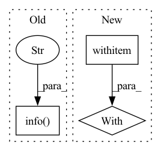

Pattern ID :4279
Before Change
logger.info("Writing the XML file to disk")
with output_xml_path.open("w") as fh_xml:
n_bytes = fh_xml.write(xml_content)
logger.info("Wrote %d bytes to %s" , n_bytes, output_xml_path.resolve().as_uri())
logger.info("PDF conversion done")
return 0After Change
return pdf_path
return None
with ThreadPoolExecutor(max_workers=num_workers) as executor:
failed_paths = executor.map(do_work, path_map.items(), timeout=60)
for path in failed_paths:
if path is not None:In pattern: SUPERPATTERN
Frequency: 3
Non-data size: 3
Instances Fragment ID: 15572671
Project Name: bluebrain/search
Commit Name: 7dae95ebd57973adba75efbce55342e295b223bd
Time: 2021-12-17
Author: Stannislav@users.noreply.github.com
File Name: src/bluesearch/entrypoint/database/convert_pdf.py
M Class Name: AnonimousClass
N Class Name: AnonimousClass
M Method Name: run(0)
N Method Name: run(0)
M Parent Class:
N Parent Class:
M File Name: src/bluesearch/entrypoint/database/convert_pdf.py
N File Name: src/bluesearch/entrypoint/database/convert_pdf.py
M Start Line: 131
M End Line: 162
N Start Line: 158
N End Line: 221
Before Change
input_data = f.read()
docs = parse_genia(input_data)
msg.info(f"Saving into DocBin" )
doc_bin = DocBin(docs=docs)
doc_bin.to_disk(output_path)
msg.good(f"Saved to {output_path}")
After Change
msg.good(f"Processing Genia")
with train_path.open("r", encoding="utf-8") as f:
train_data = f.read()
with dev_path.open("r", encoding="utf-8") as f:
dev_data = f.read()
train_docs = parse_genia(train_data)
dev_docs = parse_genia(dev_data) Fragment ID: 15572670
Project Name: explosion/spacy-experimental
Commit Name: e56939ab2cc36ad87d1cee0e60a6efd279da576f
Time: 2022-03-22
Author: EdwardSchmuhl@web.de
File Name: projects/span_boundary_detection/scripts/preprocessing/preprocess_genia.py
M Class Name: AnonimousClass
N Class Name: AnonimousClass
M Method Name: main(4)
N Method Name: main(2)
M Parent Class:
N Parent Class:
M File Name: projects/span_boundary_detection/scripts/preprocessing/preprocess_genia.py
N File Name: projects/span_boundary_detection/scripts/preprocessing/preprocess_genia.py
M Start Line: 72
M End Line: 75
N Start Line: 68
N End Line: 84
Before Change
Syncs a local directory to a GCS bucket.
source = os.path.abspath(os.path.expanduser(self.source))
sync_command = f"gsutil -m rsync -d -r {source} gs://{self.name}/"
logger.info(f"Executing: {sync_command}" )
with subprocess.Popen(sync_command.split(" "),
stderr=subprocess.PIPE) as process:
while True:
line = process.stderr.readline()After Change
Syncs a local directory to a GCS bucket.
source = os.path.abspath(os.path.expanduser(self.source))
sync_command = f"gsutil -m rsync -d -r {source} gs://{self.name}/"
with backend_utils.safe_console_status(
f"[bold cyan]Syncing "
f"[green]{self.source} to gs://{self.name}/"):
with subprocess.Popen(sync_command.split(" "),
stderr=subprocess.PIPE) as process:
while True:
line = process.stderr.readline() Fragment ID: 15572675
Project Name: skypilot-org/skypilot
Commit Name: d2a603aee76046a1da11459ee6ade14aa7b80ec8
Time: 2022-06-22
Author: romil.bhardwaj@gmail.com
File Name: sky/data/storage.py
M Class Name: GcsStore
N Class Name: GcsStore
M Method Name: sync_local_dir(1)
N Method Name: sync_local_dir(1)
M Parent Class: AbstractStore
N Parent Class: AbstractStore
M File Name: sky/data/storage.py
N File Name: sky/data/storage.py
M Start Line: 1061
M End Line: 1086
N Start Line: 1010
N End Line: 1036